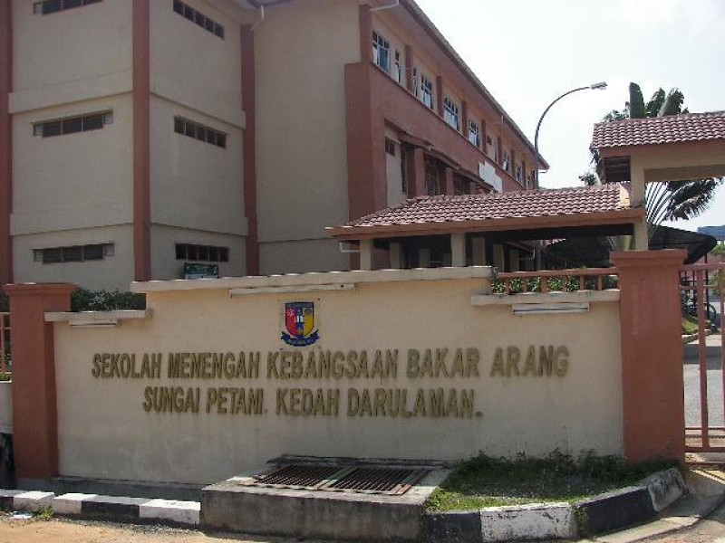
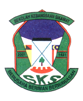

I made it into the news as an accomplished OKU (persons with disabilities) graduate who received the Anugerah Naib Canselor. Despite physical limitations due to a genetic condition, I excelled academically in Library Management and shared inspiring advice on self-belief, perseverance, and focusing on personal strengths. Raised by a single mother, I emphasizes gratitude, discipline, and the support systems available to OKU individuals. My journey underscores resilience and the importance of turning challenges into strengths.
E D U C A T I O N

- UiTM Kedah, Cawangan Sungai Petani
- Year: 2021-2025
- Diploma in Library Management (IM120)
- Bachelor of Honour (Hns.) Information Science in Library Management (CDIM260)
- Achievement: Vice Chancellor Award

- Sekolah Menengah Kebangsaan Bakar Arang
- Year: 2019-2021
- SPM Batch 2020
- Took examination during the year of Covid-19

- Sekolah Kebangsaan Sikamat
- Year: 2011-2015
- UPSR 5A'S
"Education gives us the confidence to take on challenges, to innovate, and to leave a meaningful impact in our lives and others'."